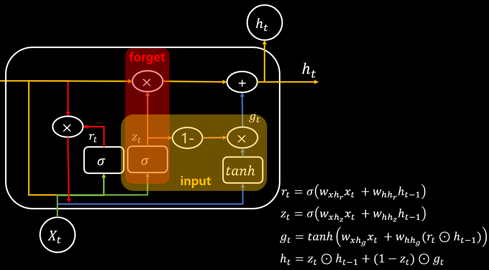

GRU layer 란?
GRU는 Gated Recurrent Units의 약자입니다. LSTM과 유사한 구조로 한국에서 개발 된 모듈입니다.
LSTM과 유사하지만 2개의 gate로 이루어져 있고 더 간단한 구조입니다.

성능면에서 유사하지만 LSTM보다 적은 학습 파라미터를 갖는 것이 장점입니다.
gru_layer.c
increment_layer
static void increment_layer(layer *l, int steps)
{
int num = l->outputs*l->batch*steps;
l->output += num;
l->delta += num;
l->x += num;
l->x_norm += num;
#ifdef GPU
l->output_gpu += num;
l->delta_gpu += num;
l->x_gpu += num;
l->x_norm_gpu += num;
#endif
}
forward_gru_layer
void forward_gru_layer(layer l, network net)
{
network s = net;
s.train = net.train;
int i;
layer uz = *(l.uz);
layer ur = *(l.ur);
layer uh = *(l.uh);
layer wz = *(l.wz);
layer wr = *(l.wr);
layer wh = *(l.wh);
fill_cpu(l.outputs * l.batch * l.steps, 0, uz.delta, 1);
fill_cpu(l.outputs * l.batch * l.steps, 0, ur.delta, 1);
fill_cpu(l.outputs * l.batch * l.steps, 0, uh.delta, 1);
fill_cpu(l.outputs * l.batch * l.steps, 0, wz.delta, 1);
fill_cpu(l.outputs * l.batch * l.steps, 0, wr.delta, 1);
fill_cpu(l.outputs * l.batch * l.steps, 0, wh.delta, 1);
if(net.train) {
fill_cpu(l.outputs * l.batch * l.steps, 0, l.delta, 1);
copy_cpu(l.outputs*l.batch, l.state, 1, l.prev_state, 1);
}
for (i = 0; i < l.steps; ++i) {
s.input = l.state;
forward_connected_layer(wz, s);
forward_connected_layer(wr, s);
s.input = net.input;
forward_connected_layer(uz, s);
forward_connected_layer(ur, s);
forward_connected_layer(uh, s);
copy_cpu(l.outputs*l.batch, uz.output, 1, l.z_cpu, 1);
axpy_cpu(l.outputs*l.batch, 1, wz.output, 1, l.z_cpu, 1);
copy_cpu(l.outputs*l.batch, ur.output, 1, l.r_cpu, 1);
axpy_cpu(l.outputs*l.batch, 1, wr.output, 1, l.r_cpu, 1);
activate_array(l.z_cpu, l.outputs*l.batch, LOGISTIC);
activate_array(l.r_cpu, l.outputs*l.batch, LOGISTIC);
copy_cpu(l.outputs*l.batch, l.state, 1, l.forgot_state, 1);
mul_cpu(l.outputs*l.batch, l.r_cpu, 1, l.forgot_state, 1);
s.input = l.forgot_state;
forward_connected_layer(wh, s);
copy_cpu(l.outputs*l.batch, uh.output, 1, l.h_cpu, 1);
axpy_cpu(l.outputs*l.batch, 1, wh.output, 1, l.h_cpu, 1);
if(l.tanh){
activate_array(l.h_cpu, l.outputs*l.batch, TANH);
} else {
activate_array(l.h_cpu, l.outputs*l.batch, LOGISTIC);
}
weighted_sum_cpu(l.state, l.h_cpu, l.z_cpu, l.outputs*l.batch, l.output);
copy_cpu(l.outputs*l.batch, l.output, 1, l.state, 1);
net.input += l.inputs*l.batch;
l.output += l.outputs*l.batch;
increment_layer(&uz, 1);
increment_layer(&ur, 1);
increment_layer(&uh, 1);
increment_layer(&wz, 1);
increment_layer(&wr, 1);
increment_layer(&wh, 1);
}
}
forward
backward_gru_layer
void backward_gru_layer(layer l, network net)
{
}
backward
update_gru_layer
void update_gru_layer(layer l, update_args a)
{
update_connected_layer(*(l.ur), a);
update_connected_layer(*(l.uz), a);
update_connected_layer(*(l.uh), a);
update_connected_layer(*(l.wr), a);
update_connected_layer(*(l.wz), a);
update_connected_layer(*(l.wh), a);
}
update
make_gru_layer
layer make_gru_layer(int batch, int inputs, int outputs, int steps, int batch_normalize, int adam)
{
fprintf(stderr, "GRU Layer: %d inputs, %d outputs\n", inputs, outputs);
batch = batch / steps;
layer l = {0};
l.batch = batch;
l.type = GRU;
l.steps = steps;
l.inputs = inputs;
l.uz = malloc(sizeof(layer));
fprintf(stderr, "\t\t");
*(l.uz) = make_connected_layer(batch*steps, inputs, outputs, LINEAR, batch_normalize, adam);
l.uz->batch = batch;
l.wz = malloc(sizeof(layer));
fprintf(stderr, "\t\t");
*(l.wz) = make_connected_layer(batch*steps, outputs, outputs, LINEAR, batch_normalize, adam);
l.wz->batch = batch;
l.ur = malloc(sizeof(layer));
fprintf(stderr, "\t\t");
*(l.ur) = make_connected_layer(batch*steps, inputs, outputs, LINEAR, batch_normalize, adam);
l.ur->batch = batch;
l.wr = malloc(sizeof(layer));
fprintf(stderr, "\t\t");
*(l.wr) = make_connected_layer(batch*steps, outputs, outputs, LINEAR, batch_normalize, adam);
l.wr->batch = batch;
l.uh = malloc(sizeof(layer));
fprintf(stderr, "\t\t");
*(l.uh) = make_connected_layer(batch*steps, inputs, outputs, LINEAR, batch_normalize, adam);
l.uh->batch = batch;
l.wh = malloc(sizeof(layer));
fprintf(stderr, "\t\t");
*(l.wh) = make_connected_layer(batch*steps, outputs, outputs, LINEAR, batch_normalize, adam);
l.wh->batch = batch;
l.batch_normalize = batch_normalize;
l.outputs = outputs;
l.output = calloc(outputs*batch*steps, sizeof(float));
l.delta = calloc(outputs*batch*steps, sizeof(float));
l.state = calloc(outputs*batch, sizeof(float));
l.prev_state = calloc(outputs*batch, sizeof(float));
l.forgot_state = calloc(outputs*batch, sizeof(float));
l.forgot_delta = calloc(outputs*batch, sizeof(float));
l.r_cpu = calloc(outputs*batch, sizeof(float));
l.z_cpu = calloc(outputs*batch, sizeof(float));
l.h_cpu = calloc(outputs*batch, sizeof(float));
l.forward = forward_gru_layer;
l.backward = backward_gru_layer;
l.update = update_gru_layer;
return l;
}
make